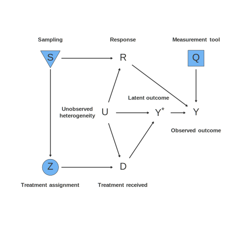
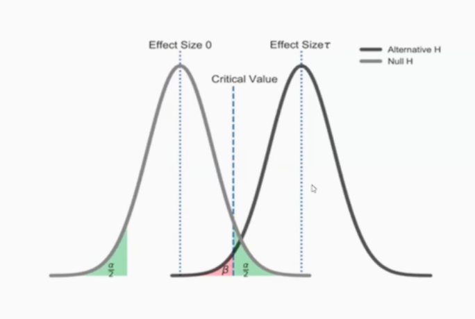
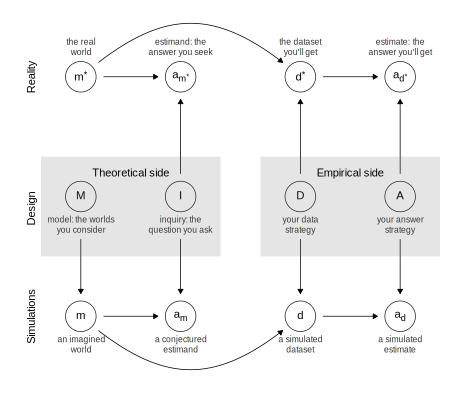
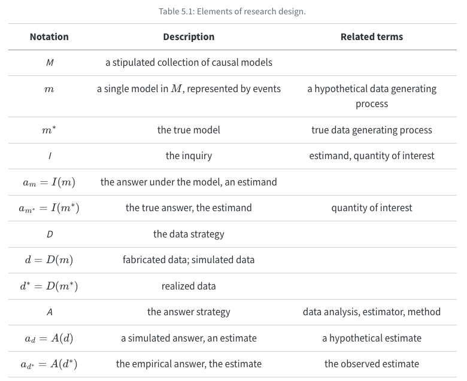
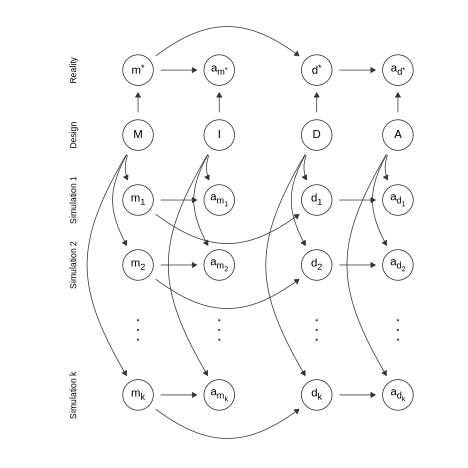

Unit 1-2: Statistical Conclusion Validity
Lecture Notes
Summary
This lecture delves into statistical conclusion validity, exploring how we can assess the reliability and accuracy of estimated treatment effects in experimental research. As we have seen, due to the fundamental nature of potential outcomes, it is inherently impossible to recover individual treatment effects since each unit reveals only one potential outcome. However, under specific assumptions and with an appropriate assignment mechanism—such as random assignment—we can consistently estimate an average treatment effect (ATE). This lecture provides a brief, selective statistical background on how to estimate the ATE and quantify the uncertainty in these estimates, ensuring statistical conclusion validity. To streamline the presentation, we focus on settings with a binary treatment and largely ignore the role of covariates.
Learning Objectives
- Explain the concept of statistical conclusion validity and its importance in ensuring that the estimated treatment effect reflects the true effect.
- Identify the key sources of uncertainty in experimental studies, including sampling variation, variance in potential outcomes, and measurement error.
- Review the principles of hypothesis testing, including the formulation of null and alternative hypotheses and the implications of Type I and Type II errors.
- Explore the role of statistical power in determining the sample size needed to detect significant effects.
- Explore the use of simulation techniques to conduct power calculations and assess the reliability of experimental designs.
- Explore the role of multiple hypothesis testing and its implications in statistical inference.
Uncertainty and Statistical Conclusion Validity
What is Uncertainty?
Uncertainty in empirical research refers to the inherent imprecision that arises when we attempt to infer quantities that cannot be directly observed. Whether we are engaged in descriptive, causal, or generalization inference, our estimates come with uncertainty that must be quantified and communicated.
Two primary frameworks exist for this purpose: the Bayesian and the frequentist approaches.1
Bayesian Approach
The Bayesian framework uses Bayes’ rule to combine prior beliefs with the observed data, resulting in a posterior probability distribution over the parameter of interest, \(\theta\). Mathematically, this is expressed as:
\[ \Pr(\theta = \theta' \mid d = d') = \frac{\Pr(d = d' \mid \theta = \theta')\, \Pr(\theta = \theta')}{\sum_{\theta''} \Pr(d = d' \mid \theta = \theta'')\, \Pr(\theta = \theta'')}, \]
where:
\(d\) represents data, and \(d'\) represents the observed data (or an “observed realization of the data”)
\(\theta'\) and \(\theta''\) represent particular values of the parameter \(\theta\).
From this posterior distribution, the posterior mean serves as our best estimate of \(\theta\), and the posterior variance quantifies the uncertainty associated with that estimate.
By applying Bayes’ rule over different values of \(\theta\), we construct a complete probability distribution that represents all possible answers. This posterior distribution simultaneously provides our best estimate—often summarized by the posterior mean—and quantifies our uncertainty via the posterior variance.
While intuitive, a challenge is that specifying prior uncertainty (\(\Pr(\theta = \theta')\)) is often a subjective choice, and the posterior distribution is often difficult to interpret and communicate.
Frequentist Approach
In contrast, the frequentist approach avoids specifying prior beliefs and focuses on the likelihood function, \(\Pr(d = d' \mid \theta = \theta')\), which describes the probability of observing the data \(d'\) given a specific value of \(\theta\).2 I.e. instead of thinking of the strength of beliefs, we consider that \(\theta\) generates the actual probability distriubtion over possible data \(d\).
This approach yields useful quantities:
P-value: The p-value for a null hypothesis, \(\theta = \theta_0\), is defined as the probability of observing data as extreme as \(d_{m*}\) under the null hypothesis, or
\[ \Pr(d = d_{m*} \mid \theta = \theta_0). \]
where \(d_{m*}\) is the test statistic.
Confidence Interval: A 95% confidence interval is constructed such that, if the experiment were repeated many times, 95% of the intervals would contain the true parameter value. This approach provides a framework to rule out parameter values that are inconsistent with the observed data, or \(Pr(d = d' \mid \theta = \theta') \leq 0.05\).
Where Does Uncertainty Come From in an Experimental Study?
Before getting into estimation and the uncertainty of the estimate, we need to be precise about the source of uncertainty. In experimental studies, uncertainty is an inherent part of the inference process, arising from several key sources. Recognizing these sources is critical to designing robust experiments and correctly interpreting the results. The main contributors to uncertainty include:
Sampling Variation:
Uncertainty due to sampling variation stems from the fact that any sample drawn from a population is just one of many possible samples. Consequently, the same treatment might yield different results if applied to a different sample, reflecting random fluctuations in the selection process.Variance in Potential Outcomes:
The natural variability in the potential outcomes (i.e., the outcomes that would be observed under different treatment conditions) can lead to uncertainty. High variance makes it more challenging to detect a true treatment effect because the noise in the data can obscure the signal, thereby reducing the study’s power to reject a false null hypothesis.Measurement Error:
Measurement error occurs when there are inaccuracies in recording or assessing the potential outcomes. Such errors introduce additional variability and can bias the estimated treatment effect, further contributing to uncertainty in the experimental results.
To vizualize this, the diagram below shows a “directed acyclic graph” (DAG) representation of the “data strategy” framework discussed in Chapter 8 of Research Design in the Social Sciences.

In Figure 8.1, we illustrate these three elements of data strategies: sampling (S), treatment assignment (Z), and measurement (Q). These nodes are highlighted by blue boxes to emphasize that they are in the control of the researcher. No arrows go into the S, Z, or Q nodes; they are set by the researcher. In each case, the strategy selected by the researcher affects a corresponding endogenous variable. The sampling procedure causes changes in the endogenous response (R), which represents whether participants provide outcome data, for example responding to survey questions. R is not under the full control of the researchers: it is affected by S, the sampling procedure, but also by the idiosyncratic choices of participants who have higher and lower interest and ability to respond and participate in the study (U). Similarly, the endogenous variable treatment D represents whether participants actually receive the treatment, regardless of their assignment Z. D is affected by the treatment assignment procedure (Z) of course. But except in cases when Z fully determines D (no noncompliance), we are concerned that it will be affected by unobserved idiosyncratic features of individuals U. The third researcher node is Q, the measurement procedure. Q affects Y, the observed outcome, measured by the researcher. Y is also affected by a latent variable Y*, which cannot be directly observed. The measurement procedure provides an imperfect measurement of that latent variable, which is (potentially) affected by treatment D and unobserved heterogeneity U. In the robustness section at the end of the chapter, we explore further variations of this DAG that incorporate threats to inference from noncompliance, attrition, excludability violations, and interference.
Can you draw four arrows representing the four exclusion restrictions?
Statistical Conclusion Validity
Given that our exclusion restrictions are satisfied, we can estimate the average treatment effect (ATE). The question is then: How can we ensure valid statistical conclusions from our estimate of the ATE?
We need to consider the uncertainty in our estimate, and whether we can reject the null hypothesis that the treatment has no effect.
Sampling Frameworks: Understanding the Foundations of Estimation in Experiments
When designing an experiment, we need to consider how the sample relates to the broader population of interest. This decision influences the statistical inference and generalizability of findings. Two main perspectives in sampling frameworks help frame this discussion: the super-population approach and the finite-population approach.
- super-population approach: units are assumed an independent sample from some hypothetical infinite population.
- finite-population approach: inference is restricted to the specific individuals in the sample. Potential outcomes of the experimental units are fixed, and the randomness comes solely from the treatment assignment.
The Super-Population Approach
The super-population approach assumes that the study sample is drawn from a larger, hypothetical infinite population represented by a probability distribution, \(Q\). This perspective views potential outcomes—both with and without treatment—as stochastic variables drawn from \(Q\). The primary goal in this framework is to estimate a feature of this distribution, typically the expected treatment effect:
\[ E[Y(1) - Y(0)] \]
where \(Y(1)\) and \(Y(0)\) denote the potential outcomes under treatment and control conditions, respectively. Under this approach, each sample is considered an independent and identically distributed (i.i.d.) draw from the distribution \(Q\), meaning the researcher is interested in making generalizable inferences beyond the study sample.
A key implication of this framework is that two sources of variance affect our estimation of treatment effects: 1. Sampling variance—arising from differences between one sample and another. 2. Assignment mechanism variance—introduced by the randomness in treatment assignment.
The super-population approach is useful when researchers aim to extend their findings to a broader population, such as in policy recommendations or clinical trials. However, it requires strong assumptions about how well the study sample represents the population.
The Finite-Population Approach
In contrast, the finite-population approach considers the sample as a fixed, well-defined group rather than a subset of an infinite population. Here, the researcher is not making inferences beyond the observed sample but instead treating the units as the entire relevant population. This approach is common in evaluations of specific interventions where the focus is on estimating the finite-population average treatment effect (ATE) (also called the sample average treatemnt effect, or SATE):3
\[ \tau_{fp} = \frac{1}{N} \sum_{i=1}^{N} \left[Y_i(1) - Y_i(0)\right] \]
where \(N\) is the total number of units in the study. Unlike in the super-population approach, the potential outcomes in a finite population framework are fixed, not random. The treatment effect is then viewed as an empirical quantity to be estimated within the sample, rather than a parameter of an underlying distribution.
A practical distinction between the two approaches is in their implications for statistical inference:
In the super-population approach, standard errors reflect both sampling variability and randomization-induced variation.
In the finite-population approach, standard errors are based only on the variation within the observed sample, without assuming a broader distribution.
This framework is particularly relevant when researchers are concerned with internal validity over generalizability, such as in program evaluations or field experiments.
Subpopulations in the Super-Population Framework
Within the super-population framework, researchers often refine their analysis by considering subpopulations to account for heterogeneous treatment effects. One important example is the Conditional Average Treatment Effect (CATE):
\[ E[Y(1, X) - Y(0, X) | X] \]
where \(X\) represents observed covariates that influence treatment effects. This approach allows for differentiated insights across groups, such as demographic segments in public health interventions.
Choosing Between the Two Approaches
The choice between these sampling frameworks depends on the research question:
- If the goal is to make generalizable claims about a broader population, the super-population approach is preferred.
- If the study focuses on a specific, finite group of units, the finite-population approach is more appropriate.
Both perspectives provide valuable insights, and many empirical studies incorporate elements of both frameworks, particularly when considering external validity and policy relevance.
Single Hypothesis Testing and Statistical Power
With our sampling framework in mind, we can now turn to single hypothesis testing and statistical power. The first thing we need to do is choose an estimator of interest. If the estimand is an Average Treatment Effect (ATE), then a reasonable choice is the difference-in-means estimator. This estimator compares the mean outcome of the treated group (\(Y(1)\)) and the control group (\(Y(0)\)):
\[ \hat{\tau} = \bar{Y}_1 - \bar{Y}_0 \]
where \(\bar{Y}_1\) and \(\bar{Y}_0\) are the sample means of the treated and control groups, respectively. The difference-in-means estimator provides an unbiased estimate of the Average Treatment Effect (ATE) (the estimand) under the assumption of random assignment.
However, while the estimator provides a point estimate of the treatment effect, it does not convey uncertainty. To formally assess whether the estimated effect is significantly different from zero, we conduct a statistical hypothesis test.
The fundamental question we seek to answer is:
Can we be confident in detecting the reported effect size in our experimental results?
To do so, we frame our problem in terms of hypothesis testing:
We begin by specifying a null hypothesis (\(H_0\)), which typically asserts that the treatment has no effect (\(\tau = 0\)).
The alternative hypothesis (\(H_A\)) posits that there is a nonzero effect (\(\tau \neq 0\)).
Hypothesis testing allows us to assess whether the observed difference-in-means provides sufficient evidence to reject \(H_0\).
The hypothesis test is based on the sampling distribution of the estimator. Because we assume random assignment, the difference-in-means estimator follows a known distribution, and we use this fact to determine whether the observed effect is large enough to be statistically significant.
Statistical Significance and the t-Statistic
To formally test the null hypothesis, we construct a t-statistic:
\[ t = \frac{\hat{\tau}}{\text{SE}(\hat{\tau})} \]
where SE(\(\hat{\tau}\)) represents the standard error of the difference-in-means estimator. As the sample size grows, this t-statistic follows a standard normal distribution (or Student’s t-distribution for small samples). A large absolute value of $ t $ provides evidence against the null hypothesis.
To determine whether the result is statistically significant, we compare the t-statistic to a critical value determined by our chosen significance level (\(\alpha\), commonly set at 0.05). If the absolute value of the t-statistic exceeds this threshold, we reject the null hypothesis.
Type I and Type II Errors
While hypothesis testing provides a structured approach to evaluating treatment effects, errors can still occur:
-
Type I Error (\(\alpha\)): Rejecting the null hypothesis when it is actually true (false positive).
- Controlled by setting the significance level (\(\alpha\)), which determines the probability of mistakenly rejecting \(H_0\).
- Lower \(\alpha\) reduces false positives but increases the risk of missing real effects.
-
Type II Error (\(\beta\)): Failing to reject the null hypothesis when it is actually false (false negative).
- Related to statistical power, which is the probability of detecting an effect when it truly exists.

Power Calculation: Ensuring Detectability
Statistical power refers to the ability of a test to correctly reject the null hypothesis when a true effect exists. Mathematically:
\[ \text{Power} = 1 - \beta \]
Factors influencing power:
- Effect size (\(\tau\)): Larger effects are easier to detect.
- Sample size (\(N\)): Larger samples reduce variability, increasing power.
- Significance level (\(\alpha\)): Lowering \(\alpha\) increases the risk of missing true effects.
- Standard deviation of outcomes: Higher variability in outcomes reduces power.
To achieve a well-powered experiment, researchers conduct power calculations before data collection to determine the minimum sample size required to detect an effect with reasonable confidence.
A Simple Example
Let’s consider a simple example of a power simulation using a simple random assignment to a treatment and control group, where the estimate is the difference-in-means estimator.
Step 1: Define Simulation Parameters
- Let’s assume we have a total sample size of \(N = 200\) individuals.
- The treatment group receives an intervention, while the control group does not.
- The true treatment effect is set to \(\tau = 2\).
- The outcome variable follows a normal distribution with mean 10 and standard deviation 4.
set.seed(072111) # Ensures reproducibility
# Define parameters
N <- 200 # Total sample size
p <- 0.5 # Probability of assignment to treatment
true_tau <- 2 # True treatment effect
sigma <- 4 # Standard deviation of outcomeStep 2: Simulate Data
Now we can simulate the data using data.table:
# Simulate data using data.table
dt <- data.table(id = 1:N)
dt[, treatment := rbinom(.N, 1, p)]
dt[, outcome := 10 + true_tau * treatment + rnorm(.N, mean = 0, sd = sigma)]
#display first few rows
head(dt) id treatment outcome
<int> <int> <num>
1: 1 0 10.39758
2: 2 1 17.78058
3: 3 0 11.46925
4: 4 0 14.56752
5: 5 1 10.55347
6: 6 1 14.99933Step 3: Estimate Treatment Effect
diff_means <- dt[treatment == 1, mean(outcome)] - dt[treatment == 0, mean(outcome)]
SE <- sqrt(dt[treatment == 1, var(outcome)] / dt[treatment == 1, .N] +
dt[treatment == 0, var(outcome)] / dt[treatment == 0, .N])
t_stat <- diff_means / SE # Compute t-statistic
p_value <- 2 * (1 - pt(abs(t_stat), df = N - 2)) # Two-tailed test
# Display results
cat("Estimated Treatment Effect:", diff_means, "\n")Estimated Treatment Effect: 2.453868 cat("p-value:", p_value, "\n")p-value: 1.088986e-05 Step 4: Power Simulation
First, let’s consider how we will interpret the results:
- If the p-value is less than 0.05, we reject the null hypothesis and conclude that the treatment has a significant effect.
- If the p-value is greater than 0.05, we fail to reject the null, meaning we do not have enough evidence to confirm a treatment effect.
Now, let’s simulate a power simulation:
First, define the power simulation function:
simulate_power <- function(N, true_tau, sigma, p, alpha, reps = 1000) {
rejections <- 0
for (i in 1:reps) {
dt <- data.table(id = 1:N)
dt[, treatment := rbinom(.N, 1, p)]
dt[, outcome := 10 + true_tau * treatment + rnorm(.N, mean = 0, sd = sigma)]
diff_means <- dt[treatment == 1, mean(outcome)] - dt[treatment == 0, mean(outcome)]
SE <- sqrt(dt[treatment == 1, var(outcome)] / dt[treatment == 1, .N] +
dt[treatment == 0, var(outcome)] / dt[treatment == 0, .N])
t_stat <- diff_means / SE
p_value <- 2 * (1 - pt(abs(t_stat), df = N - 2))
if (p_value < alpha) {
rejections <- rejections + 1
}
}
return(rejections / reps)
}Now, simulate this experiment 1,000 times:
# Run power simulation
power <- simulate_power(N = 200, true_tau = 2, sigma = 4, p = 0.5, alpha = 0.05, reps = 1000)
cat("Estimated Power:", power, "\n")Estimated Power: 0.938 Step 5: Interpreting Power Calculation
- The power of the test is the proportion of simulations in which we correctly reject the null hypothesis when the treatment effect is truly \(\tau = 2\).
- A power value close to 0.80 or higher indicates that the experiment is well-powered.
Try changing the sample size or effect size, to see how the power changes.
Simulations in Research Design
To fix ideas of what we’re doing with simulations, it might be helpful to take a step back and view this in the context of an overall research design.
We aim to generate empirical answers that closely approximate the true treatment effect. However, because we never observe both potential outcomes for an individual, we rely on statistical methods and experimental design to make valid inferences. Simulation plays a crucial role in assessing research designs, allowing us to compare simulated answers to possible true answers across multiple realizations of a study.
In empirical research, a design consists of two halves:
- Theoretical Component: Defines the inquiry using a model \(M\).
- Empirical Component: Applies the data strategy \(D\) to generate a dataset, then applies an estimation strategy \(A\) to obtain the empirical answer \(a_d\).
Simulation dissociates the design from reality, allowing researchers to assess how their chosen model performs across various possible scenarios, even when the true answer is unknown.
The MIDA Framework for Simulation
A structured way to think about research design and simulation is the MIDA Framework,4(https://book.declaredesign.org/declaration-diagnosis-redesign/research-design.html)] which consists of:
- M: The Model - The underlying data-generating process that defines the inquiry.
- I: The Inquiry - The specific research question we are trying to answer.
- D: The Data Strategy - The way we collect and structure data, including sampling and treatment assignment.
- A: The Answer Strategy - The statistical method we use to estimate the effect.


In a real-world study, we can only observe a single realization of the design and generate one empirical answer \(a_d\). However, through simulation, we can consider many possible data realizations by repeatedly drawing from different models \(m_1, m_2, ..., m_k\) within the model space \(M\). This allows us to assess how our research design performs across different scenarios.
Diagnosing Research Designs with Simulation
When we simulate a research design, we evaluate its performance by considering:
- Bias: How close is the empirical answer \(a_d\) to the true answer \(a_m\)?
- Variance: How much do the empirical answers fluctuate across different realizations?
- Coverage: How often do confidence intervals include the true effect?
- Power: How frequently does the study correctly reject the null hypothesis when a true effect exists?
The bottom half of the figure below illustrates how simulation allows us to examine the research design across multiple models (\(m_1, ..., m_k\)), generating different answers (\(a_{m_1}, a_{m_2}, ..., a_{m_k}\)) and associated datasets (\(d_1, d_2, ..., d_k\)). The simulated research design does not have direct access to the true answer but can assess performance across the models under consideration.

Multiple Hypothesis Testing
The Challenge of Multiple Hypothesis Testing
In many empirical settings, researchers conduct multiple hypothesis tests rather than a single test. This introduces the risk of false positives, or mistakenly finding significant effects simply due to chance. Multiple hypothesis testing arises naturally in at least three key scenarios:
- Multiple Outcomes: When we examine several outcomes (\(Y_i\)) to determine whether any are affected by the treatment.
- Heterogeneous Treatment Effects (CATEs): When treatment effects vary across subgroups, and we want to assess which subgroups exhibit an effect.
- Multiple Treatments: When we compare multiple interventions (\(D_i\)) and want to test their effects relative to a control group or to each other.
To properly interpret results, we need statistical techniques that adjust for multiple comparisons and control the probability of false discoveries.
Types of Multiple Hypothesis Tests
There are two broad types of statistical hypothesis testing frameworks when dealing with multiple comparisons:
- Joint Tests: These assess whether at least one hypothesis is true (e.g., “Is at least one treatment effective?”).
- Simultaneous Tests: These examine whether multiple hypotheses are true at the same time (e.g., “Are both Treatment A and Treatment B effective?”).
When conducting multiple tests, researchers need to control for an increased family-wise error rate (FWER), which is the probability of making at least one Type I error (false positive).
Controlling the Family-Wise Error Rate (FWER)
A single hypothesis test controls the probability of a Type I error at a given significance level (\(\alpha\)). However, with multiple tests, the probability of making at least one false rejection increases:
\[ \text{FWER} = 1 - (1 - \alpha)^k \]
where \(k\) is the number of tests. For example, if we conduct 5 tests at \(\alpha = 0.05\), the probability of making no Type I errors across all tests is:
\[ (1 - 0.05)^5 = 0.7738 \]
Thus, the probability of making at least one Type I error is:
\[ FWER = 1 - 0.7738 = 0.2262 \]
This means there is a 22.62% chance of mistakenly rejecting at least one null hypothesis across the five tests. If we perform 20 tests, the FWER increases to 64%.
Approaches to Controlling the FWER
To mitigate this issue, researchers employ various multiple testing corrections, such as:
- Bonferroni Correction: Adjusts the significance level by dividing \(\alpha\) by the number of tests: \(\alpha^* = \alpha / k\). This is simple but conservative.
- Holm Method: A stepwise procedure that ranks p-values and adjusts them sequentially to control the FWER more efficiently.
- Modern Approaches (e.g., Westfall-Young, Benjamini-Hochberg FDR control): These methods control for false discovery rates and are widely used in large-scale testing.
Simulating Multiple Hypothesis Testing in R
To illustrate the impact of multiple testing and FWER correction, let’s do a simulation in R:
library(data.table)
set.seed(072111) # Ensures reproducibility
# Define parameters
N <- 200 # Sample size
k <- 10 # Number of hypothesis tests
alpha <- 0.05 # Significance level
# Simulate k independent hypothesis tests
dt <- data.table(test_id = 1:k)
dt[, p_value := runif(.N, min = 0, max = 1)] # Generate uniform random p-values
dt[, bonferroni := p_value < (alpha / k)] # Bonferroni correction
dt[, holm := p.adjust(p_value, method = "holm") < alpha] # Holm correction
dt[, naive_reject := p_value < alpha] # Standard test (without correction)
# Count false positives
false_discoveries <- dt[, sum(naive_reject)]
adjusted_false_discoveries <- dt[, sum(bonferroni)]
holm_false_discoveries <- dt[, sum(holm)]
cat("False positives (no correction):", false_discoveries, "\n")False positives (no correction): 2 cat("False positives (Bonferroni correction):", adjusted_false_discoveries, "\n")False positives (Bonferroni correction): 0 cat("False positives (Holm correction):", holm_false_discoveries, "\n")False positives (Holm correction): 0 Interpreting the Simulation
- Without correction, we expect around \(\alpha \times k\) false discoveries.
- Bonferroni correction sharply reduces false positives but may be overly conservative.
- Holm correction provides a better balance, controlling FWER while maintaining statistical power.
Note: In the lab, we’ll cover some modern approaches that are more powerful but a bit more complex.
References
Footnotes
Reference: Research Design in the Social Sciences↩︎
Can you explain in words how this differs from the Bayesian probability above?↩︎
Wager Chapter 1 refers to this as SATE.↩︎
Reference: Declaration Design↩︎